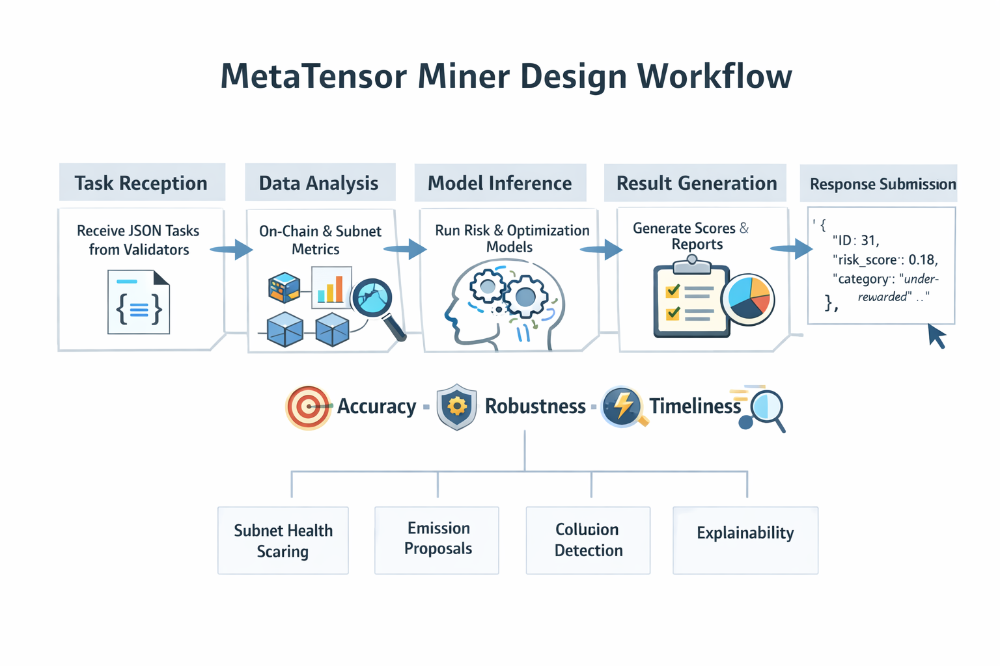
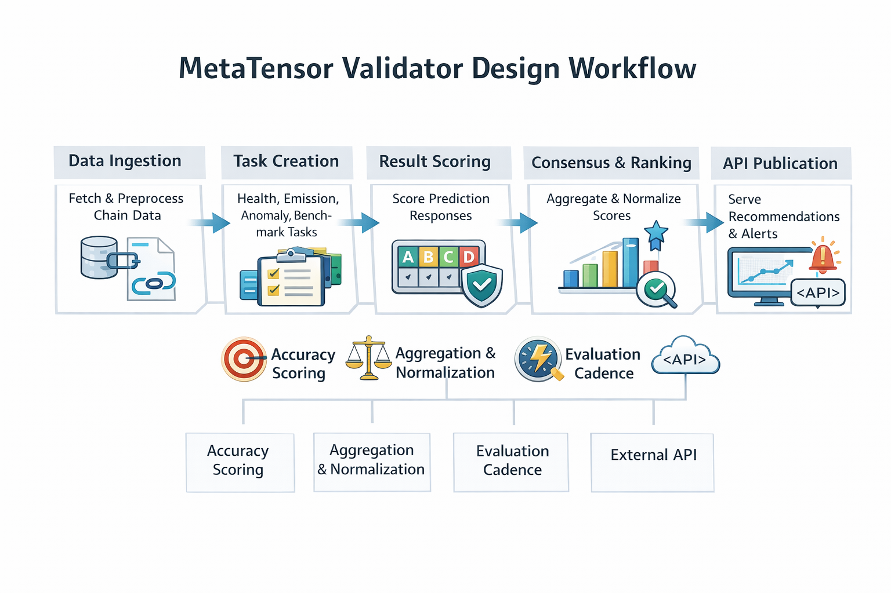
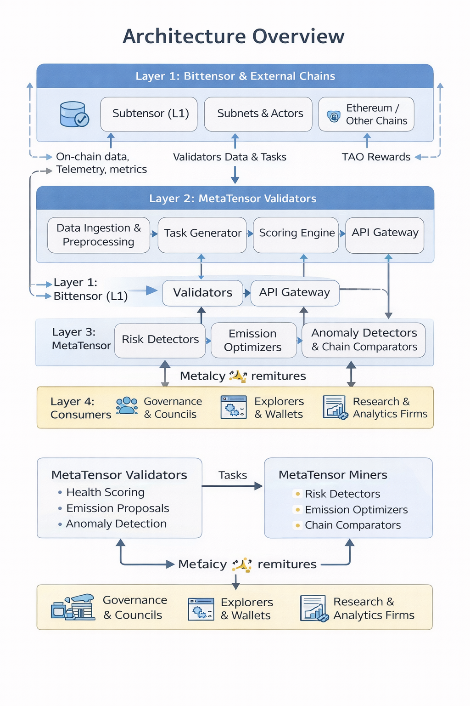
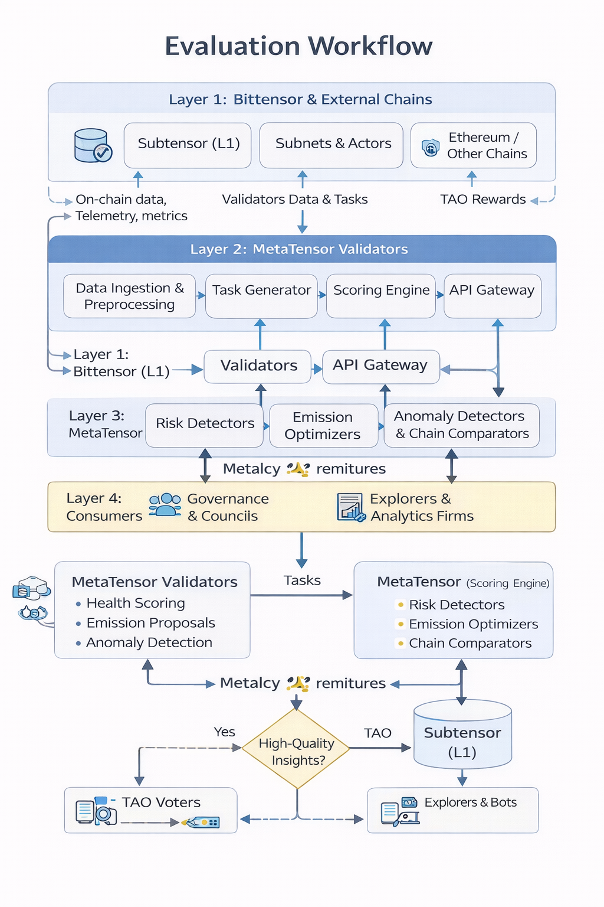

MetaTensor Proposal
Bittensor Governance & Efficiency Optimizer Subnet
0. Executive Summary
MetaTensor is a Bittensor subnet whose primary "user" is the Bittensor protocol and ecosystem itself. It continuously analyzes on-chain, network, and subnet-level data to produce governance-grade insights and recommendations: which subnets are healthy or risky, how emissions could be better allocated, where collusion or centralization might be emerging, and what parameter changes would most improve efficiency and decentralization.
Miners build analytical and predictive models over Bittensor and external blockchain data, while validators curate tasks, score models, and expose a stable API of recommendations and alerts to governance actors, explorers, and tooling. The subnet's design turns long-term network health into a measurable "digital commodity" that can be rewarded automatically through TAO emissions.
1. Subnet Overview
1.1 Vision
Vision:
Make Bittensor the most transparent, data-driven, and self-optimizing AI network
by providing a continuous stream of objective, AI-generated intelligence
about its own health, efficiency, and risks.
Tagline:
"MetaTensor – the brain that helps Bittensor govern and optimize itself."
1.2 Core Idea and Digital Commodity
Bittensor is composed of many independent subnets that each produce a digital commodity (AI inference, training, financial signals, etc.), with miners producing and validators evaluating the commodity. Emissions of TAO are distributed across subnets and participants based on perceived value.
MetaTensor's digital commodity includes:
- Network health scores for subnets, validators, and miners (performance, decentralization, collusion risk).
- Emission and parameter tuning recommendations (e.g., which subnets should receive more or less emission, which are candidates for retirement or expansion).
- Risk and anomaly alerts (e.g., sudden stake concentration, suspicious validator clusters, weird emission patterns).
- Comparative metrics vs other chains (e.g., Ethereum) on decentralization and efficiency.
These outputs are consumed by:
- Bittensor governance participants (TAO voters, councils, core teams).
- Explorers and analytics dashboards.
- Bots or off-chain services that automate some governance or monitoring tasks.
The subnet does not directly change L1 code or consensus. Instead, it produces high-quality, constantly updated information and recommendations that governance and tooling can choose to adopt.
2. Incentive & Mechanism Design
2.1 Design Goals
The mechanism design aims to:
- Reward miners who provide accurate, timely, and useful analyses and predictions about the network.
- Reward validators who design robust evaluation tasks and maintain honest, high-availability infrastructure.
- Discourage low-effort, copy-paste, or adversarial behavior.
- Ensure that to earn rewards, miners must perform non-trivial analysis over rich data – a genuine proof of intelligence/effort.
2.2 Emission and Reward Logic
Let Et be the TAO emitted to MetaTensor during epoch t. In line with the general Bittensor subnet pattern, this emission is split between miners and validators.
- Miner share: αEt, e.g. α = 0.75 (75% of emission).
- Validator share: (1 - α)Et, e.g. 25%.
2.2.1 Miner Reward Allocation
Each epoch, validators compute a normalized performance score si ∈ [0,1] for each miner i. This score reflects:
- Accuracy of predictions and risk scores relative to later outcomes.
- Usefulness and originality of recommendations (measured indirectly by agreement with other strong miners, and success on special "insight" tasks).
- Stability and coverage across multiple task types.
Rewards are distributed using a softmax-style weighting over scores:
wi = exp(βsi) / Σj exp(βsj)
Ri = wi · αEt
Where β > 0 controls how sharply rewards focus on top performers (higher β → more competitive, winner-takes-most dynamics). Miners with very low scores (below a threshold τ) can be zeroed out.
2.2.2 Validator Reward Allocation
Validators receive rewards based on:
- Scoring quality: how consistent their scores are with the median across validators (low variance and no systematic bias).
- Task quality: diversity and difficulty of tasks they generate (covering different subnets, time scales, and risk types).
- Service quality: uptime, latency, and API reliability for serving MetaTensor outputs to external users.
2.3 Mechanisms to Discourage Low-Quality or Adversarial Behavior
- Score thresholds and baselines: Validators maintain baseline models/heuristics as a minimal standard. Miners whose performance does not significantly improve on baselines receive zero or negligible rewards.
- Sentinel tasks: Validators inject special hidden-label tasks that test for trivial or plagiarized behavior. Miners repeatedly failing sentinel tasks can be flagged and excluded.
- Cross-validator consensus checks: For each miner and task, compare scores across validators. Large systematic deviations can indicate a malicious or colluding validator.
- Time-based performance windows: Use rolling windows (e.g., last 30 epochs) to smooth one-off lucky predictions. This makes consistent quality more important than intermittent spikes.
2.4 Proof of Intelligence / Effort
MetaTensor qualifies as proof of intelligence/effort because:
- Tasks require modeling complex, multi-variable time series (emissions, stake flows, subnet performance), graph structures (stake & validator relationships), and game-theoretic behaviors.
- Miners must detect subtle patterns and anomalies (such as emerging cartels, parameter inefficiencies, or subnets whose emission does not match their value).
- Ground truths (e.g., eventual failures, slashing, delistings, or realized performance metrics) are hidden or delayed; naive heuristics cannot consistently perform well.
3. High-Level Algorithm (Task → Reward)
3.1 Task Lifecycle
- Data ingestion: Validators and some miners ingest network data (on-chain events, subnet metrics, external blockchain data).
- Task generation (validators): Validators formulate evaluation tasks grouped into categories: Health scoring, Emission optimization, Anomaly/collusion detection, Comparative benchmarking.
- Task broadcast: Validators publish tasks to miners via the standard subnet protocol.
- Miner inference: Miners receive tasks, run their models, and submit structured responses.
- Scoring (validators): For tasks with delayed ground truth, validators maintain a score buffer. For tasks with synthetic ground truth, score directly.
- Score aggregation and consensus: Validators aggregate task-level scores into per-miner scores using normalized metrics and robust statistics.
- Reward computation: Apply the emission formula to compute miner and validator rewards.
- Publication & API: Validators publish MetaTensor outputs via public API endpoints, explorers, dashboards, and governance reports.
3.2 Flow Description
The flow follows this sequence:
- Bittensor Network Data → MetaTensor Validators (Task Generator)
- Validators → Miners (Tasks in JSON format)
- Miners → Validators (Predictions & Recommendations)
- Validators → Subtensor (Scores → TAO Rewards)
- Validators → Governance & Dashboards (Health Scores, Alerts, Recommendations)
4. Miner Design
4.1 Miner Tasks
MetaTensor miners are specialized analysts/agents. They cover several task families:
1. Subnet Health Scoring
- Input: historical metrics for each subnet (emission share, usage, staking patterns, validator diversity, age, performance proxies)
- Output: Risk score for each subnet (0-1), Category labels (e.g., "emerging, stable, over-rewarded, under-rewarded, at-risk")
2. Emission Optimization Proposals
- Input: entire subnet set with health scores and performance metrics
- Output: Suggested relative emission weights per subnet, explanation of major changes
3. Collusion & Centralization Detection
- Input: stake distribution, ownership clustering, behavior similarity between validators/miners
- Output: Flags for suspected collusion clusters, centralization metrics
4. Comparative Chain Metrics
- Input: Bittensor network data plus external chain data
- Output: Relative ranking on decentralization, liveness, censorship resistance, and utilization
4.2 Input and Output Formats
Tasks and responses use JSON format. Example for subnet health scoring:
{
"task_type": "subnet_health_scoring",
"epoch_window": "2026-01-01_to_2026-02-01",
"subnets": [{"id": 31, "age_epochs": 1234, "emission_share": 0.015, ...}]
}Miner response:
{
"epoch_window": "2026-01-01_to_2026-02-01",
"subnet_scores": [{"id": 31, "risk_score": 0.18, "category": "under_rewarded", ...}],
"model_version": "metaminer_v1.3"
}4.3 Performance Dimensions
The performance of a MetaTensor miner's analytical agent is evaluated across several key dimensions, which collectively determine its overall score and ranking within the subnet.
| Performance Dimension | Description | How It Is Measured |
|---|---|---|
| Prediction Accuracy | The miner's ability to correctly predict subnet health risks, emission efficiency, and detect emerging problems before they become obvious. This is the primary measure of success. | Backtested AUC/ROC over 30-day rolling windows: correlation between predicted risk scores and actual outcomes (deregistrations, performance drops, governance flags). Higher AUC = better foresight. |
| Recommendation Quality | The miner's ability to propose emission weight adjustments and parameter changes that would genuinely improve network efficiency if adopted. | Simulated utility gain: Run miner's proposed emission weights through a network simulator vs current weights. Score = % improvement in decentralization + total value captured by high-performing subnets. |
| Anomaly Detection | The miner's ability to identify collusion, centralization risks, and unusual stake/emission patterns early. | Precision/Recall on sentinel tasks: Validators inject synthetic anomalies (fake stake concentration, validator cartels). Miners scored on detection rate vs false positives. F1-score used. |
| Robustness | The miner's consistency across different network conditions, subnet types, and time horizons (short-term vs long-term predictions). | Variance penalty: Coefficient of variation across 100+ subnets and 7-day rolling performance. Lower variance = more reliable across market conditions. |
| Timeliness | The miner's ability to react quickly to sudden network changes (new subnets, stake shifts, emission anomalies). | Response latency (seconds from task broadcast to submission) + adaptation speed (performance recovery after injecting network shocks). Weighted 20% of total score. |
| Explainability | The quality and usefulness of the miner's rationales and feature importance for human governance actors. | Human-curated bonus: Top 10% miners get +5% score boost if their JSON justifications are selected for governance dashboards (validator committee vote). |
Scoring Formula
Final Score (s_i) = 0.50 × Accuracy + 0.25 × Recommendation Quality +
0.15 × Anomaly Detection + 0.08 × Robustness +
0.02 × Timeliness + 0.00 × Explainability (bonus)Ultimately, the goal for a miner is to maximize Prediction Accuracy within the given constraints. The softmax reward model concentrates emissions on miners who demonstrate genuine analytical intelligence - not just surface-level statistics, but deep understanding of Bittensor's complex game-theoretic dynamics.
Miners must continuously adapt to:
- New subnets appearing/deregistering
- Evolving validator strategies
- Governance parameter changes
- External market conditions affecting stake flows
This creates true "proof of intelligence" - trivial heuristics (moving averages, simple thresholds) cannot consistently beat sophisticated miners who model the full network state, stake graphs, and game-theoretic incentives.
5. Validator Design
5.1 Validator Responsibilities
Validators in MetaTensor:
- Ingest and preprocess the relevant network data for task generation
- Construct evaluation tasks with clear formats and hidden ground truths
- Distribute tasks, collect responses, and compute scores
- Combine scores across validators to form global miner rankings
- Expose a stable external API with aggregated MetaTensor outputs
5.2 Scoring and Evaluation Methodology
5.2.1 Accuracy Scoring
- Subnet health predictions: Track events like deregistration, performance degradation. Score based on AUC/ROC, rank correlation.
- Emission optimization: Use simulation/backtesting to score how well proposed adjustments would have performed.
- Anomaly detection: Inject synthetic anomalies as sentinel tasks and evaluate detection rates.
5.2.2 Aggregation and Normalization
Validators normalize scores into 0-1 range per task type and compute weighted aggregate:
si = Σk γk si,k
Validators share per-miner scores, and global aggregation (median or robust mean) produces final si for rewards.
5.3 Evaluation Cadence
- Micro-cycles (intra-epoch): Tasks generated continuously; provisional scores updated frequently
- Epoch cycles: At each emission epoch, scores over sliding window are finalized
- Long-window backtesting: Over 30-90 days, validators run explicit backtests to refine scoring weights
5.4 Validator Incentive Alignment
Validator rewards incentivize:
- Honest scoring (agreement with peers)
- Challenging, diverse tasks
- High uptime and reliable API service
6. Business Logic & Market Rationale
6.1 Problem Statement
As Bittensor's subnet ecosystem grows (AI training, inference, DeFi, security, etc.), it becomes increasingly difficult for governance participants to evaluate which subnets add value, for stakers to understand where to allocate capital, and for core devs to decide on parameter changes in a data-driven way.
Existing analytics are fragmented across explorers, community dashboards, and ad-hoc scripts. No single subsystem provides a continuous, AI-driven "control panel" for the whole network.
MetaTensor addresses this by making network health and optimization itself into a first-class digital commodity with clear economic incentives.
6.2 Competing Solutions
Inside Bittensor:
- Subnet registries and explorers show lists and basic stats
- Some subnets focus on financial/trading signals or infrastructure, but none has governance/optimization as primary goal
Outside Bittensor:
- Ethereum relies on manual research by analytics firms
- Dashboards (Dune, Nansen, Glassnode) provide metrics but no protocol-level incentive alignment
6.3 Why This Use Case Fits Bittensor
- Bittensor is built as a marketplace where AI subnets produce useful digital commodities
- Governance and network health information is a perfect candidate: measurable, validatable over time, critical to protocol success
- The miner/validator split maps naturally to analytics: miners compute metrics, validators check and curate them
6.4 Long-term Adoption and Sustainable Business
Value creation:
- For governance: Better visibility and early warning on risks
- For stakers/investors: Clearer understanding of healthy vs risky subnets
- For tooling providers: Explorers/wallets can integrate MetaTensor scores
Revenue and sustainability:
- TAO emissions bootstrap the subnet
- Can charge partners/enterprise users micro-fees for advanced analytics APIs
- Governance could allocate protocol budgets to ensure continuation
7. Go-to-Market Strategy
7.1 Initial Target Users and Use Cases
- Bittensor governance actors: Core devs, council members, large TAO holders
- Explorers and dashboards: Bittensor block explorers wanting richer insights
- Stakers, delegators, subnet teams: Use scores to understand perception
Initial focus use cases:
- Network health dashboard
- Governance recommendation feed
7.2 Distribution and Growth Channels
- Developer-friendly APIs: Public REST/gRPC endpoints for health scores, emission suggestions, alerts
- Integration with existing tools: Work with explorers, wallets to integrate signals
- Community engagement: Publish "MetaTensor State of the Network" reports, run open challenges
7.3 Incentives for Early Participation
- Miners: Temporarily higher miner share α and/or early bonuses, public leaderboards
- Validators: Early validator bonuses for bootstrapping infrastructure
- Tooling partners: Free/discounted access for integrating and promoting
8. Architecture Diagrams and Flows
8.1 High-Level Architecture
Layer 1: Bittensor & External Chains
- Subtensor (L1), Subnets & Actors, Ethereum / Other Chains
- Data flows: On-chain data, telemetry, metrics
Layer 2: MetaTensor Validators
- Data Ingestion & Preprocessing → Task Generator → Scoring Engine → API Gateway
Layer 3: MetaTensor Miners
- Miner Models (Risk, Emission, Anomaly Detectors, Chain Comparators)
Layer 4: Consumers
- Governance & Councils, Explorers & Wallets, Research & Analytics Firms
8.2 Detailed Task Flow
- Start: New Epoch t
- Validators ingest network data
- Build tasks (Yes/No) → Create health/emission/anomaly tasks → Broadcast to miners
- Miners compute predictions & recommendations
- Validators receive and validate responses
- Compute task-level scores
- Aggregate per-miner scores
- Compute TAO rewards via emission logic
- Two branches: Send rewards (on-chain), Publish scores via API/dashboard
- End: Epoch t complete
9. Extra Sections to Strengthen the Proposal
9.1 Security, Privacy, and Attack Considerations
- Data privacy: Most data is on-chain and public; off-chain telemetry can be anonymized
- Adversarial miners: Mitigated via sentinel tasks with synthetic patterns, measuring diversity across miners
- Adversarial validators: Mitigated via cross-validator consistency checks and score aggregation
9.2 Governance Integration
MetaTensor outputs are recommendations: they do not automatically change emission weights or protocol parameters. Governance processes can choose whether and how to adopt them.
- Propose "MetaTensor signal" field for governance proposals
- Governance tooling that displays MetaTensor insights when inspecting subnets/proposals
9.3 Implementation Roadmap
- Phase 0 (Ideathon): Finalize design and mechanism spec, create mock dashboards and diagrams
- Phase 1 (Hackathon – Bittensor testnet): Implement minimal MetaTensor subnet with simplified data pipeline, one or two task types, basic scoring
- Phase 2 (Early mainnet prototype): Expand data coverage, introduce advanced miners, build public explorer web app
- Phase 3 (Governance integration & ecosystem partnerships): Collaborate with explorers, wallets, governance tools, run community campaigns
Task and Reward Flow
Miners Design Workflow

Validators Design Workflow

Architecture Overview

Evaluation Workflow
